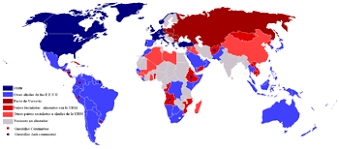

DEFINICION
La Guerra Fría constituye un rumbo político agresivo que tomaron los círculos reaccionarios de las potencias imperialistas, bajo la dirección de Estados Unidos e Inglaterra, tras la Segunda Guerra Mundial. La Guerra Fría estuvo orientada a no permitir la coexistencia pacífica entre Estados de diferentes sistemas sociales, a agudizar la tensión internacional y a crear las condiciones para el desencadenamiento de una nueva guerra mundial (…) En la práctica la política de Guerra Fría se hizo patente en la creación de bloques político-militares, en la carrera de armamentos, en el establecimiento de bases militares en el territorio de otros Estados, en la histeria de la guerra, en la intimidación de los pueblos amantes de la paz (…), en la desorganización de las relaciones económicas pacíficas, en los intentos de sustituir, por la violencia y la dictadura, las normas generalmente reconocidas de las relaciones diplomáticas entre los Estados.
MAPA DEL MUNDO DURANTE LA GUERRA FRIA
El color azul dentro del mapa representa a Estados Unidos y su dominio;al igual que el color rojo a la URRS y su dominio durante 1950 hasta 1991

CARACTERISTICAS
No fue un conflicto armado, sino que constituyó una amenaza permanente de conflicto entre los dos bloques.
Se produjo una fuerte escalada armamentista. Tanto la Unión Soviética como los Estados Unidos y las potencias aliadas a ambos bloques acumularon armas nucleares con la capacidad de destruir el planeta completo.
La demostración del poder y la capacidad destructiva de los Estados en pugna se manifestó en constantes ensayos nucleares.
El equilibrio entre las superpotencias se sostuvo en el mutuo temor de un conflicto nuclear que provocaría la mutua destrucción. Se desencadenó, especialmente en la sociedad occidental una fuerte sensación de miedo a una guerra nuclear. El momento de máxima tensión fue la Crisis de los misiles en Cuba (1960).
Las diferencias entre las potencias se manifestaron en la participación directa o indirecta en conflictos entre otros países, especialmente de Asia y África, que no estaban alineados directamente con uno de los bloques. Por ejemplo, la Guerra de Corea (1950-1953), la Guerra de Vietnam (1955-1975), la Guerra del Yom Kipur (1973).
La competencia entre los bloques se evidenció en otras áreas como la cultural y la tecnológica. Una de estas manifestaciones fue la carrera espacial, una competencia para la exploración del espacio.
En las sociedades, el conflicto se sostenía a través de los enormes aparatos de propagando de ambos bloques. Para las potencias eran tan importantes los logros obtenidos como su comunicación ya que los triunfos y los fracasos de las misiones se percibían como triunfos o fracasos de un modelo político o de un Estado sobre el otro.
CAUSAS
Podemos resaltar 2 principales causas de la Guerra Fría:
*La causa predominante de esta guerra fue que tanto la Unión Soviética como los Estados Unidos quisieron imponer sus ideologías a través del mundo.
*El plan Marshall, el cual tenía como objetivo que los norteamericanos presentaran recursos económicos a bajos intereses para que los países capitalistas resurgieran tras la Segunda Guerra Mundial, no agradaba al comunismo de Josef Stalin.
CONSECUENCIAS
La polarización del mundo en dos bandos, el procomunista y el anti comunista. Esto se manifestó en el debilitamiento de los partidos comunistas de Occidente y la eliminación de los partidos no comunistas en la URSS.
Acumulación de armas en los países satélites de las potencias que luego de finalizada la Guerra Fría se redirigieron a movimientos de guerrilla y a guerras civiles.
Se consolidó el dominio soviético sobre los países de Europa oriental y la injerencia de EE.UU en la política interna de otros países.
La amenaza permanente de guerra favoreció la aparición de movimientos antibelicistas y antinucleares internacionales.